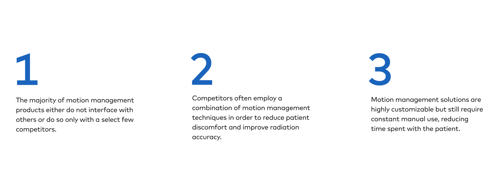
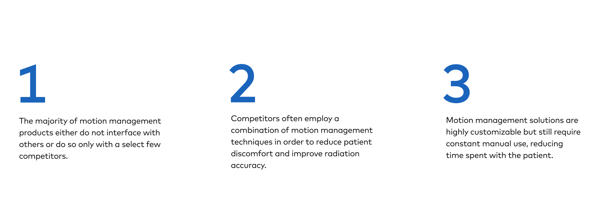
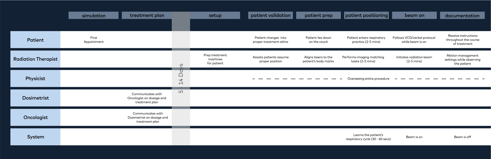
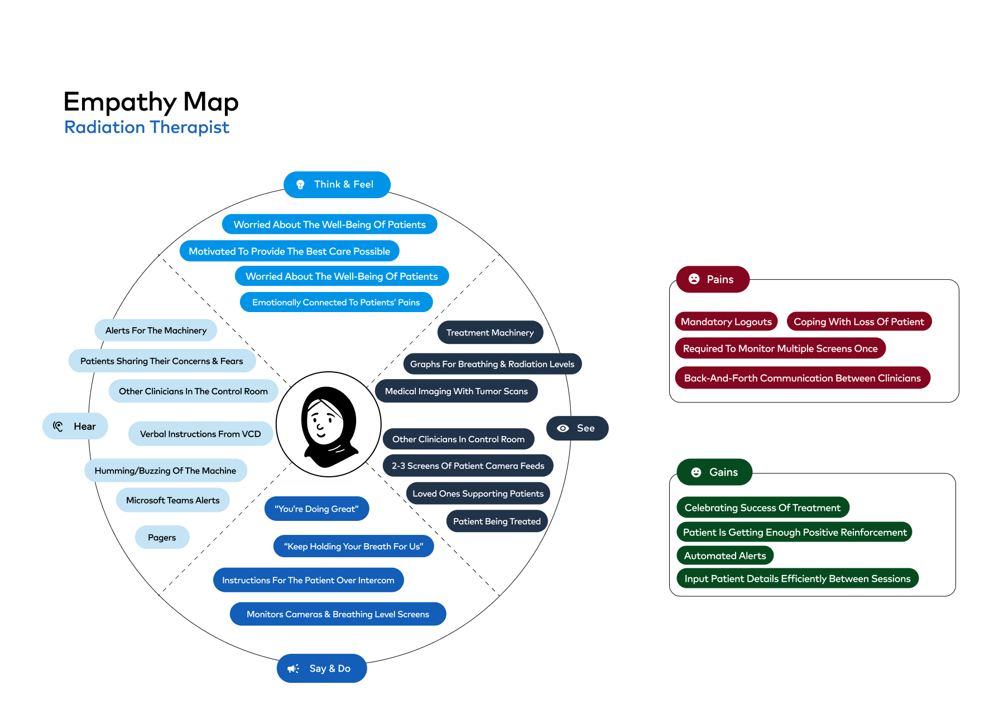
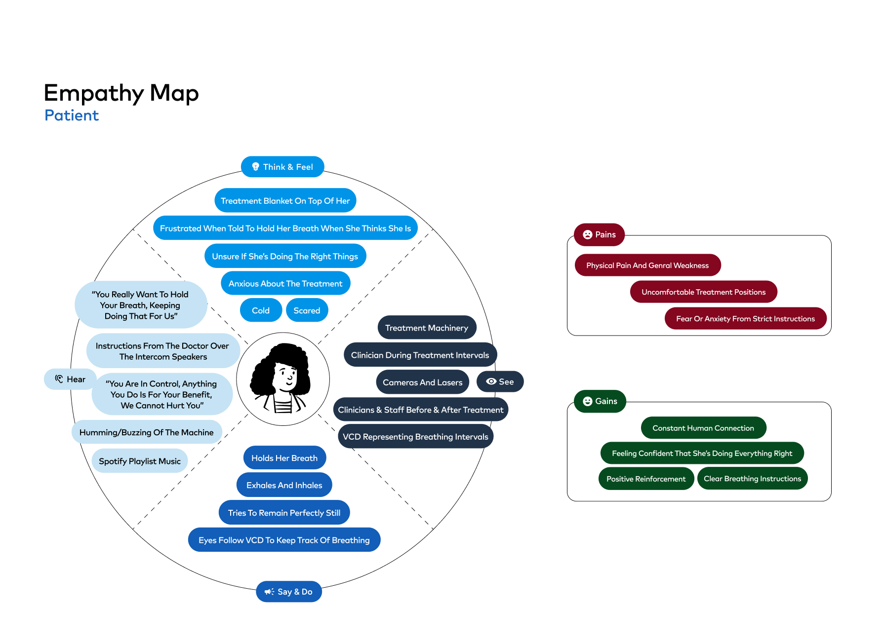

background
Varian is a company that makes hardware and software for radiation therapy. This project was the capstone for a Master in HCI and Design at UC Irvine. Varian worked with our team as contractors to find a solution for motion management that occurs during radiation therapy.
problem
Develop a concept for a motion management solution that can be tailored based on different clinical needs and budgets.
method

literature review
In the literature review, we compiled information about:
- Cancer as a disease
- Radiation therapy as a practice
- The forms of radiation therapy in use today
- The importance of precision and dose in radiation therapy
- Motion Management solutions
- Varian's Motion Management technology and its applications
- The limitations of Varian's existing motion management solution
- Competitors in the field
competitive analysis
 

varian labs
clinician interviews
To begin our stakeholder interview journey, we leveraged the findings from our literature review to identify the key stakeholders involved in the radiation therapy process. We knew that we would need to interview radiation oncologists, radiation therapists, physicists and dosimetrists to get a sense of the full radiation therapy picture. With these roles identified, we worked with a radiation therapist at Mayo Clinic to recruit participants from each of these professional backgrounds for our research. In total, we recruited and interviewed; four radiation therapists, one radiation oncologist, two physicists, one dosimetrist, one veterinary radiation oncologist.

models
  